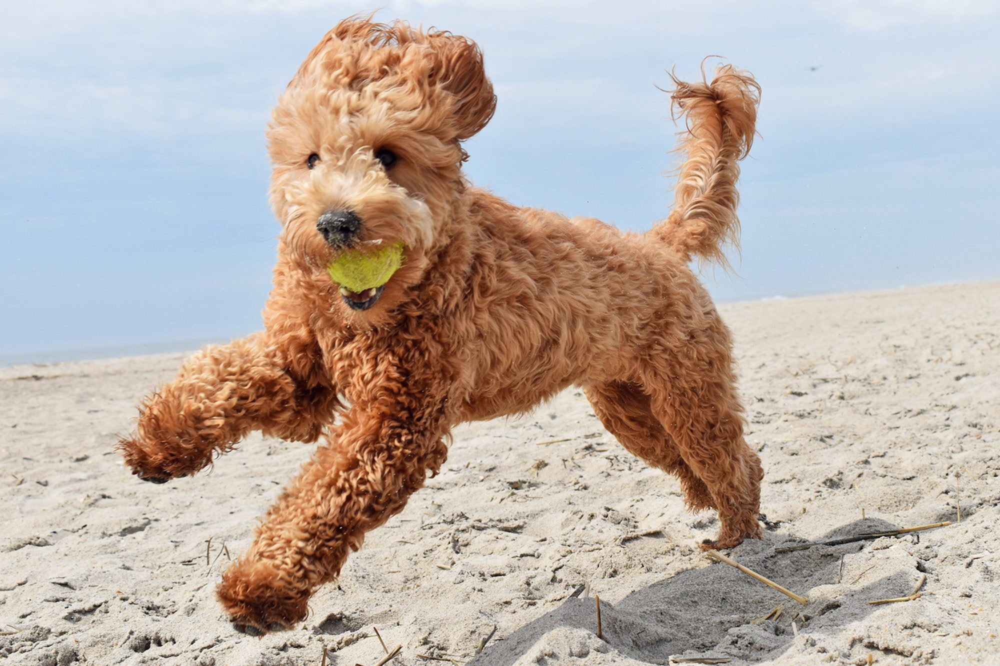
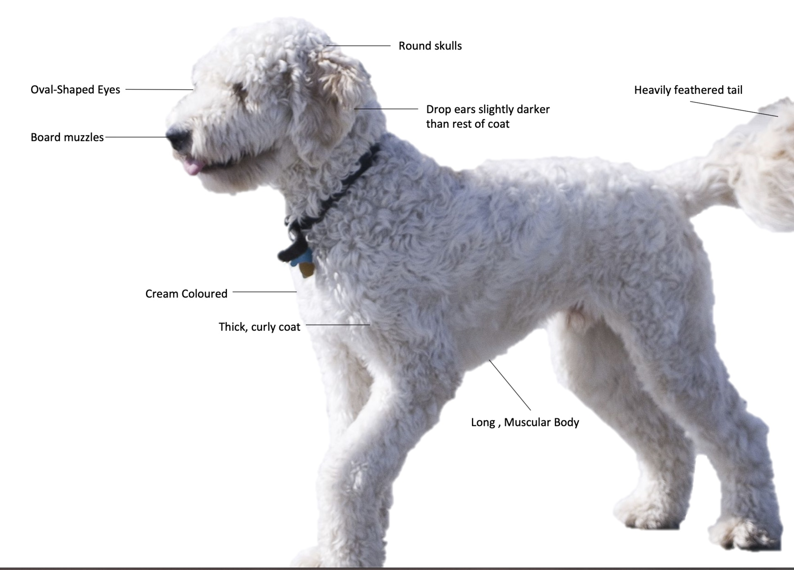

A Goldendoodle, also known as the Groodle (in Australia), is bred from a Golden Retriever and a Poodle. First widely bred in 1990s, the crossbreed is bred in three different size varieties corresponding to the size variety of Poodle used as a parent.
In general, Goldendoodles have round skulls, broad muzzles, heavily feathered tail, drop ears, and oval-shaped eyes.[2] Goldendoodles’ retriever parentage makes their body long and muscular, and likely to have deep chest and wide stance.
The Large Goldendoodle typically stands 20 to 24 inches (51 to 61 cm) and weighs 50 to 80 pounds (23 to 36 kg), the Medium Goldendoodle typically stands 17 to 20 inches (43 to 51 cm) and weighs 40 to 50 pounds (18 to 23 kg), and the Miniature Goldendoodle typically stands up to 20 inches (51 cm) and weighs 15 to 35 pounds (6.8 to 15.9 kg)
Goldendoodle is a long-haired dog breed and their coat can can vary considerably, there are three main coat types: straight, wavy and curly.[2] Straight coated Goldendoodles resemble the coat found on their Golden Retriever parents, which would usually lie flat on their body. Wavy coated Goldendoodles is a combination of the Poodle’s curly coat and the Golden Retriever’s straight coat. Their coat is wavy, with loose, shaggy curls. This type of coat is the most common amongst Goldendoodles. Curly coated Goldendoodles resemble the coat of a Poodle. Their coat is thick, curly and less likely to shed.[2] Goldendoodles' coats come in varying colours, with the most common colours being cream, red, black, gold, apricot, brown, or a combination (parti-coloured).
Often claimed to be 'hypoallergenic' or 'non-shedding', Goldendoodles do shed hair, although often in lesser quantities than many other dogs.
In general, Goldendoodles tend to take over Golden Retrievers’ friendly, affectionate, trustworthy and enthusiastic nature;[1] whilst also demonstrating Poodles’ reputable intelligence, sociability and trainability.[1] Goldendoodles predominately exhibit high energy level, loyalty and playfulness;[1] they are friendly with children and considered a good family pet.[1][12] The crossbreed often exhibits strong retriever instincts inherited from its gundog parent breeds,[12] which make them have an active mouth and high tendency to retrieve objects.
Source: here
Welsh Corgi here
Bull Terrier here
Siberian Husky here